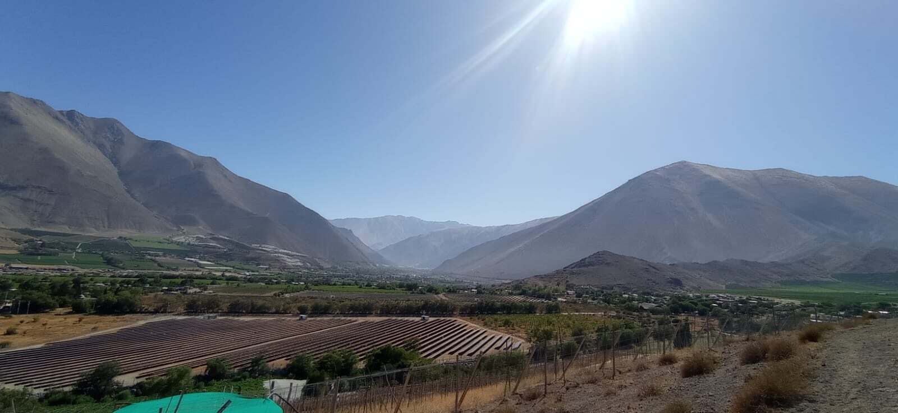
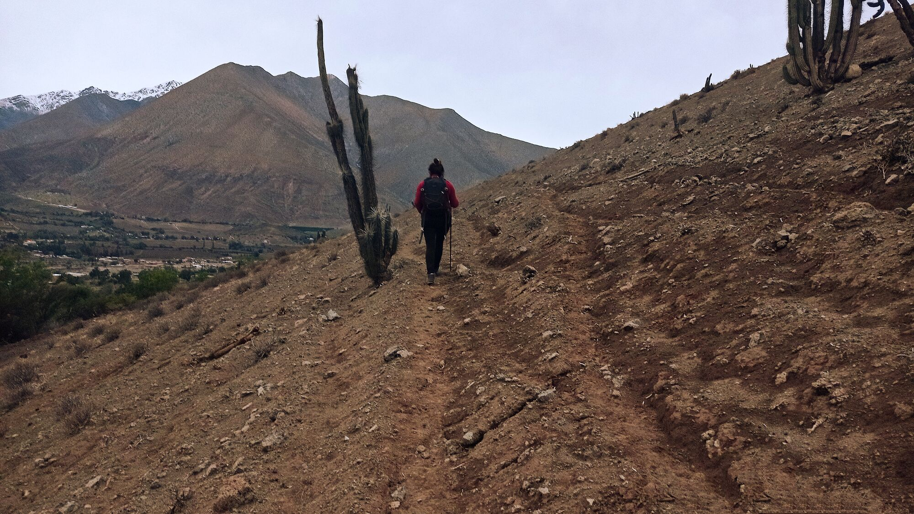
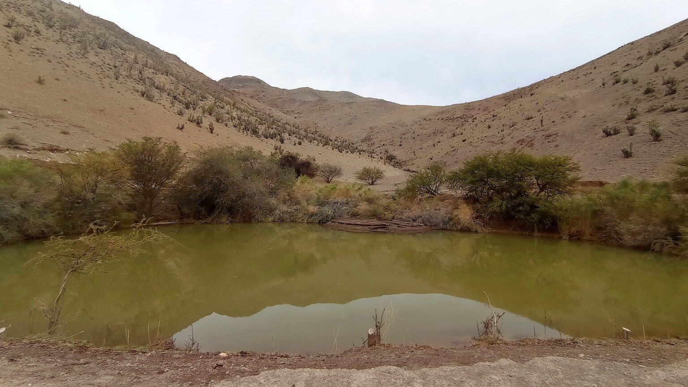
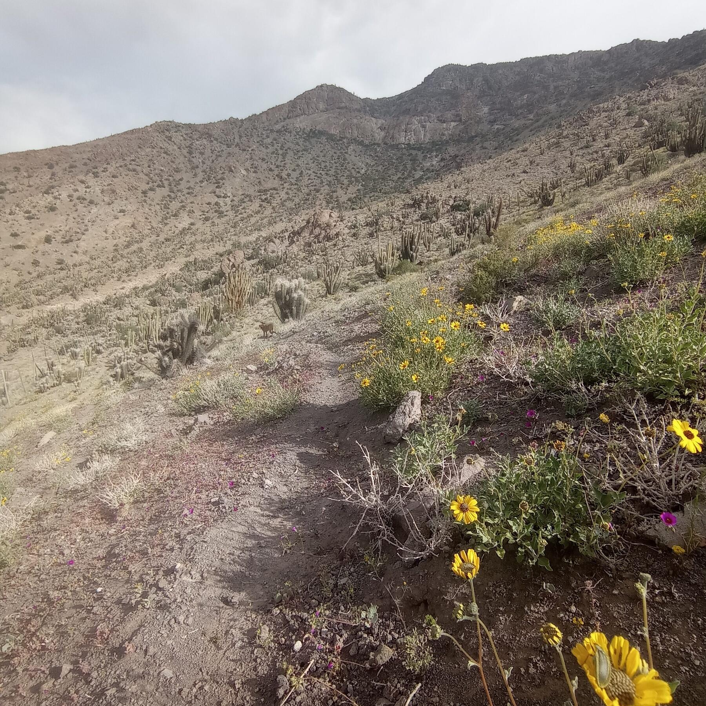
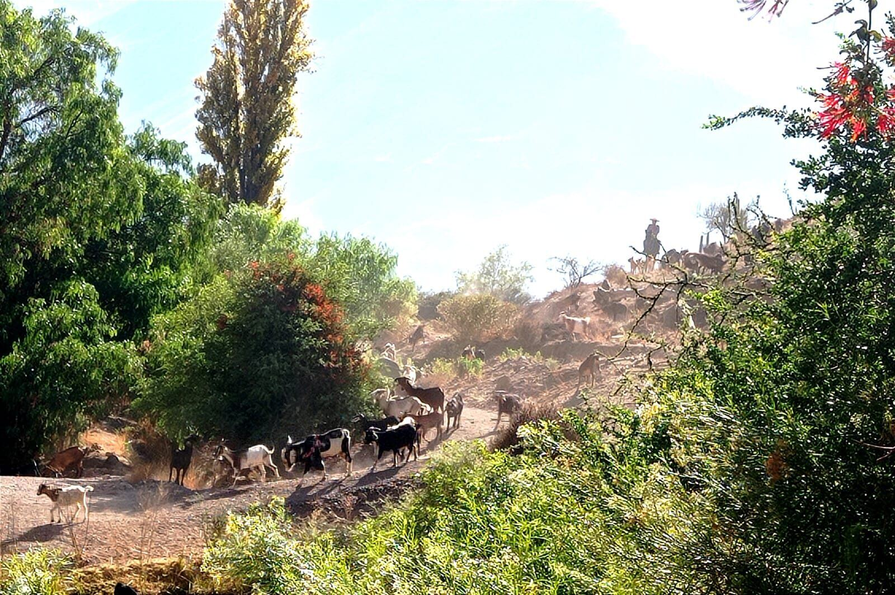
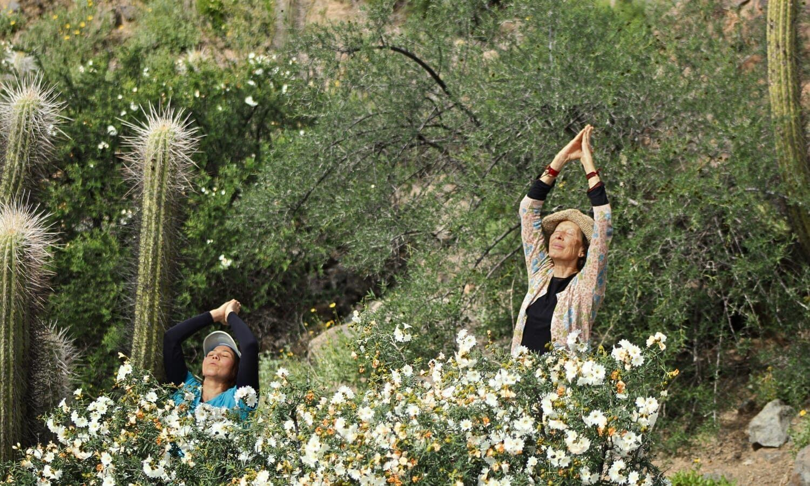
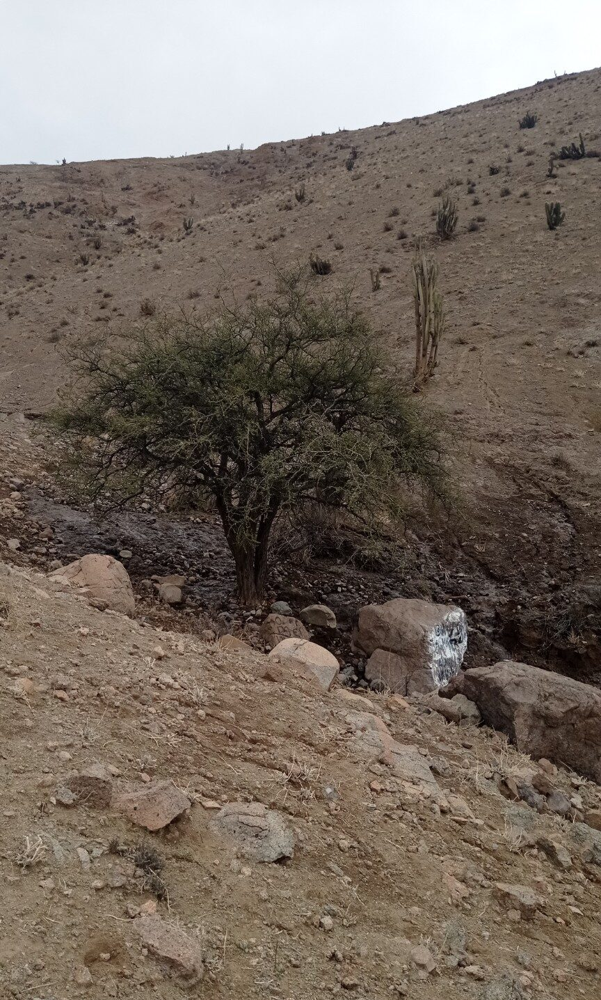
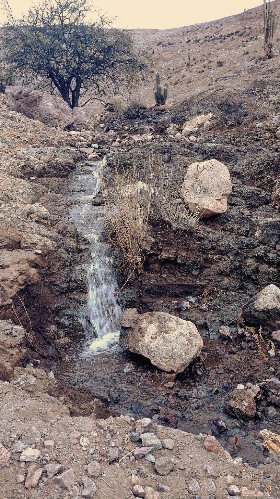
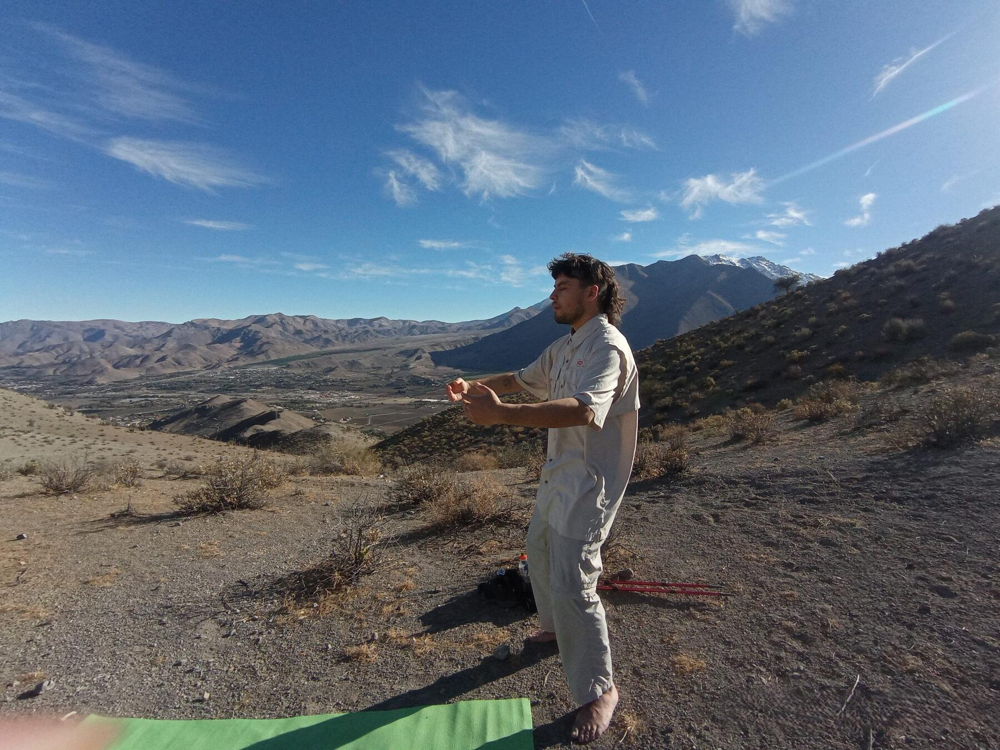

Guided by Loreto, at Casa Pumagui.

You leave Casa Pumagui on foot, the streets of Vicuña falling away behind you with every step. There is no engine, no schedule — just the quiet rhythm of walking, and the valley opening below.
This is where the disconnection begins. Not with an instruction, but with distance. Slowly, the ordinary world becomes a view, then a memory.


The path climbs slowly through a landscape unlike any other — ancient cacti, wild desert blooms, dry stone underfoot. No technical skill is required. No rush. The walk itself is part of the experience, not a means to reach it.
With every bend, the sounds of the village fade a little further, and the sounds of the mountain — wind, birds, your own breath — grow a little clearer.

Tucked into the mountainside, hidden from the road, this natural sanctuary is where the experience begins. Native trees, still water, birdsong, and the occasional herd of goats passing through, unbothered by your presence.
Mountains hold the space. Silence sets the pace. And ancient cacti stand watch, as they have for centuries.
Once you arrive at the sanctuary, the experience shifts inward. Loreto guides you through a sequence rooted in Andean wisdom and drawn from ancient practice — never rushed, never performative. Each element flows into the next, the way a stream finds its own course.
You breathe. You move, slowly, guided rather than instructed. The resonance of the singing bowls settles into the body long after the sound has faded. And when it's time, herbal tea and a local snack close the circle — a quiet return, not an ending.

There is no studio here, no walls. The mountain wind sets the tempo. The cacti and wildflowers are the only witnesses. What would be a class elsewhere becomes, here, simply a conversation with the place you're standing in.
Nature is not simply the setting.
It becomes part of the experience.
This is a private experience, held for a maximum of two guests. There is no group to keep pace with, no itinerary beyond the one the mountain sets. Loreto shapes each journey around the people walking it — their pace, their curiosity, their need for stillness.
Private · Unhurried · Held in place


Nature is not simply the setting.
It becomes part of the experience.